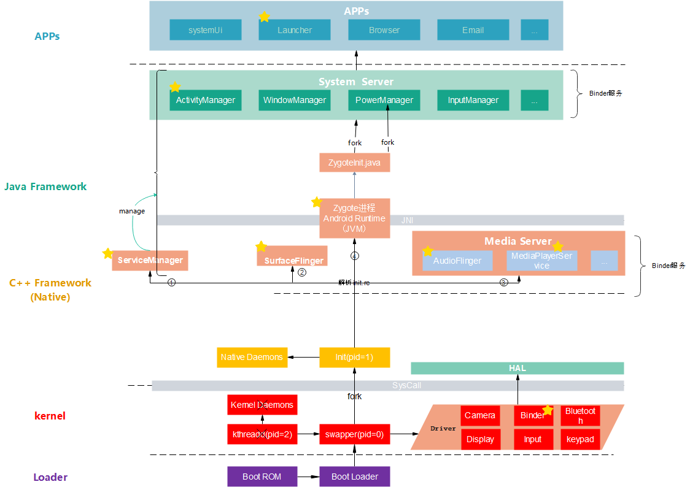
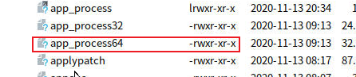
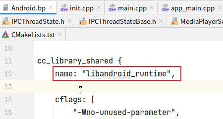
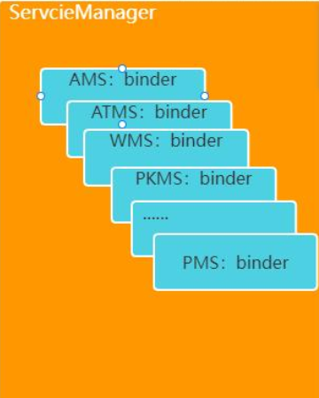
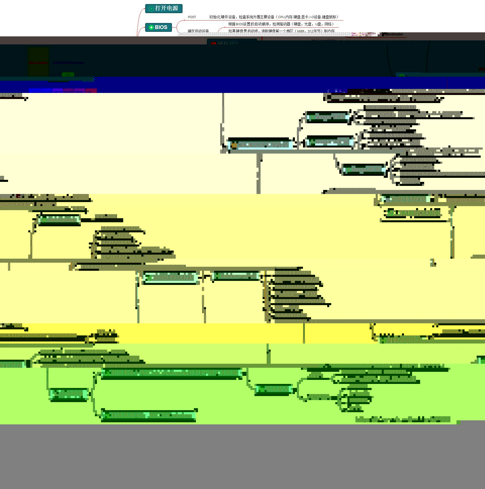

1. 目录
2. 系统启动流程（纵向主线）
主线：开机 ----> 桌面（launcher + systemUI）
2.1. 0层图

图：startApp.eddx
总结：
化简：init进程与zygote是一样的，
一个拉起cpp的服务进程，一个孵化Java的进程--->zygote可删化简之合理性：整张图，目标就是启动native和java的服务
自然：
先启动native服务，之后java 自然：
启动native众多服务之前，自然要先启动serverManager来管理 ---> ~~serverManager可删 自然：
启动java 服务之前，java-native的自然有语言墙、搭建好梯子jni ----> ~~Runtime 自然，可删
自然：zygote存在合理性：只是为了 fork java服务进程而存在的 ---> ~~zygote可以删掉
总之：
1、启动自下而上；调用，自上而下（最终内核驱动，自然）
2、只需要记：整张图，目标就是启动native和java的服务。其他的都可以删了（是合理性下的必然）。
盘古开天辟地、女娲造人、女人生孩子模型：
人（类图），事（流程图）：
盘古，pid=0 内核进程：
自然的：
目标：开天辟地天地未开，宇宙混沌如鸡蛋（即kernel）一片----》 即当时只有kernel，自然流程：
（0）触发点：TODO （1）
盘古 处于混沌中，即 pid=0 内核进程在内核中，自然 （2） 盘古开天辟地： 辟地--------pid=0 内核进程， 加载驱动，这是设备运行的基础（即地），自然 开天-------
pid=0 内核进程，孵化了第一个 用户空间 进程init(pid=1) 女娲，自然
宇宙混沌：kernel
自然，
里面有盘古
天与地之间，人间：用户空间
造人的 女娲：
自然：init进程 pid=1。。。。。。
目标：造人为啥叫init进程？ 第一个来到天地间的，来 创造人的（init的），自然流程：
（0）触发点：
女娲是被盘古叫来 创世的，自然。 女娲呆在 院子里（native） 创造人 （1）根据天书，因为女娲目标是造人，那么先有管理者。首先 创建了一个管理天地的 玉皇大帝： init进程 解析 init.rc，首先创建了1 ServiceManager
（2）根据天书，因为目标是造人，所以先创建了人的眼睛（显示服务进程surfaceFlinger）、创建人的耳朵（Media Server）
（3）根据天书，因为目标是造人，最后在院子里（native）捏了一个 女人（zygote native进程）
init.rc: 天书：如何创世的天书
玉皇大帝： ServiceManager，
自然的：
管理天地一切(java和native两个世界的所有服务)，比如2 世间一切视觉的显示（显示服务进程），比如3 一切声音（媒体服务进程），眼（显示）、耳（声音）、鼻、舌、身（触觉：inputManagerService）、意；自然

女人：zygote native进程
天然的： 女人，天生就是 生孩子的（孵化java进程的），自然
目标： 生一个完整的家庭
流程：
（1） 触发点：女娲在院子里造出了女人
（2）女人想要从院内跑到院外，自然： 院内的女人 要搬梯子 ：
zygote native进程 安卓的Runtime（包括jvm、注册jni） （3）女人通过梯子 翻墙。自然：zygote native进程 通过 反射 调用了 zygoteInit.java的main函数
（4）翻墙到了院外，便是院外的女人： zygote运行在java环境中了
（5）院外有大量的自然资源，自然。女人 先弄了一些 花草树叶 给自己穿衣：加载类、加载资源color、库so到jvm
（6）弄好了自己，拿出来自己一个肋骨，变成了自己的丈夫： SystemSever。。。注意：只有生 丈夫，是女人自己主动触发的；而其他孩子，都是别人让的
（7）有了丈夫，怎么与丈夫之间联系呢？ 女人买了个 对讲机 ：起了一个socket 服务，一直循环，等待丈夫的消息 注意：不得不：女人只听丈夫的，自然： 女人只通过socket与丈夫交流 自然： 只有丈夫能让女人生孩子。
孩子则不能直接让，需要告诉父亲，让妈妈生个弟弟，父亲再让女人生。
丈夫： SystemSever
自然，他的作用是，给儿子们(APP)，提供服务： SystemSever给APP 提供核心服务
目标：丈夫有了，可是还没有孩子，生一个家庭对外的 接口人
流程：
（1）触发点：女人 “生”了丈夫
（2）丈夫告诉女人，要生一个 家庭对外的 接口人，看客户有啥需求： 即AMS 让 zygote 创建 launcher进程
家庭对外的 接口人 ：launcher进程
根据 客户需要什么样的孩子，就让女人去生
院子里：native
院子外：java
墙：cpp与java的语言隔离
墙上的梯子： 安卓的Runtime、jni、jvm
一句话总结， 盘古开天辟地、女娲造人、女人生孩子模型：
记忆三个目标，忘记其他所有。
补充：
2、3、4，为啥是这个顺序？：自然女娲先 捏眼耳鼻舌身意，最后才捏了一个完整的人（此时Zygote就是可以调用surfaceFlinger等的）
TODO: 上面模型的 文字描述，也是写文章的思路（即文字版的 类图和时序图）。待详细完善
TODO: 上面是通过联想模型记忆，如果 通过 不得不 来记忆呢？
2.2. 各个层的简介
2.2.1. Loader层：
- Boot ROM: 当手机处于关机状态时，长按Power键开机，引导芯片开始从固化在
ROM里的预设代码开始执行，然后加载引导程序到RAM； - Boot Loader：这是启动Android系统之前的引导程序，主要是检查RAM，初始化硬件参数等功能。
2.2.2. Linux内核层
Android平台的基础是Linux内核，比如ART虚拟机最终调用底层Linux内核来执行功能，自然
- 启动Kernel的swapper进程(pid=0)：该进程又称为idle进程, 系统初始化过程Kernel由无到有开创的第一个进程, 用于初始化进程管理、内存管理，
加载 驱动（Display、Camera、Binder）等相关工作，自然； - 启动kthreadd进程（pid=2）：是Linux系统的内核进程，会创建内核工作线程kworkder，软中断线程ksoftirqd，thermal等内核守护进程。
kthreadd进程是所有内核进程的鼻祖。----》TODO: 不懂
2.2.3. 硬件抽象层 (HAL)
硬件抽象层 (HAL) 提供标准接口，HAL包含多个库模块，其中每个模块都为特定类型的硬件组件实现一组接口，比如WIFI/蓝牙模块，当框架API请求访问设备硬件时，Android系统将为该硬件加载相应的库模块。
2.2.4. Android Runtime & 系统库
每个应用都在其自己的进程中运行，都有自己的虚拟机实例。ART通过执行DEX文件可在设备运行多个虚拟机，DEX文件是一种专为Android设计的字节码格式文件，经过优化，使用内存很少。ART主要功能包括：预先(AOT)和即时(JIT)编译，优化的垃圾回收(GC)，以及调试相关的支持。
这里的Native系统库主要包括init孵化来的用户空间的守护进程、HAL层以及开机动画等。启动init进程(pid=1),是Linux系统的用户进程，记忆：init进程是所有用户进程的鼻祖。
- init进程会孵化出ueventd、logd、healthd、installd、adbd、lmkd等用户守护进程；
- init进程还启动
servicemanager(binder服务管家)、bootanim(开机动画)等重要服务 - init进程孵化出Zygote进程，Zygote进程是Android系统的第一个Java进程(即虚拟机进程)，
Zygote是所有Java进程的父进程，Zygote进程本身是由init进程孵化而来的。
2.2.5. Framework层
- Zygote进程，是由init进程通过解析init.rc文件后fork生成的，Zygote进程主要包含：
- 加载ZygoteInit类，注册Zygote Socket服务端套接字
- 加载虚拟机
- 提前加载类preloadClasses
- 提前加载资源preloadResouces
- System Server进程，是由Zygote进程fork而来，
System Server是Zygote孵化的第一个进程，System Server负责启动和管理整个Java framework，包含ActivityManager，WindowManager，PackageManager，PowerManager等服务。 - Media Server进程，是由init进程fork而来，负责启动和管理整个C++ framework，包含AudioFlinger，Camera Service等服务。
2.2.6. App层
- Zygote进程孵化出的第一个App进程是Launcher，这是用户看到的桌面App；
- Zygote进程还会创建Browser，Phone，Email等App进程，每个App至少运行在一个进程上。
- 所有的App进程都是由Zygote进程fork生成的。
2.2.7. 墙 Syscall
- Native与Kernel之间有一层系统调用(SysCall)层，见Linux系统调用(Syscall)原理;
Q：为什么要有Syscall墙？（等价问题：为什么要有内核空间和用户空间？）
A：它确实就是一道墙，目的也是墙的作用：
-保护硬件资源不会被随便访问，从而保证内核稳定性 （等价的表述：让用户态程序能受限访问硬件设备，比如申请系统资源，操作设备读写，创建新进程等。用户空间发生请求，内核空间负责执行，这些接口便是用户空间和内核空间共同识别的桥梁，这里提到两个字“受限”，是由于为了保证内核稳定性，而不能让用户空间程序随意更改系统，必须是内核对外开放的且满足权限的程序才能调用相应接口-----http://gityuan.com/2016/05/21/syscall/）

一些认知：
1、native代码也是用户态
2、APP、系统服务都是用户态
3、APP 打开文件 ----> JVM ----> native ---> Syscall ---> 内核 ---> 驱动
以上流程，不涉及系统服务
关于线程：
-Syscall墙 隔离的是代码，不是线程。是同一个线程。（即：
线程的用户态和内核态指的是同一个线程上下文中不同的代码执行。用户态是应用程序的代码，而内核态是内核代码、设备驱动代码等运行在线程的上下文中。例如，中断和系统调用会将执行权交给内核态代码。）
具体的 Syscall 的实现，见《linux》
2.2.8. 墙JNI
Java层与Native(C/C++)层之间的纽带JNI，见Android JNI原理分析。
2.2.9. 进程关系
// ps -ef 显示用户空间进程
UID PID PPID C STIME TTY TIME CMD
root 1 0 0 13:30:36 ? 00:00:02 init // 一号进程，父进程PPID 0号
...............
root 16 2 0 13:30:36 ? 00:00:04 [rcuc/1]
...............
root 623 1 0 13:30:39 ? 00:00:09 zygote64 //Zygote 进程
root 624 1 0 13:30:39 ? 00:00:07 zygote
...............
system 8951 623 0 14:10:30 ? 00:00:00 com.android.settings // 应用进程在 Zygote 进程 之后
u0_a81 9022 623 0 14:10:31 ? 00:00:00 com.android.dialer
u0_a37 12510 623 0 13:41:05 ? 00:00:01 android.process.acore
ps 显示进程号:
- init是1号进程（自然，
其父进程PPID = 0号进程） - 自然，
0号进程属于 内核态，所以ps没有显示 - Linux整个进程树形成：TODO
- Zygote 进程:
所有java进程(系统+APP都) 孵化机。自然，皇妃
Init 的可执行文件: x 可执行 ---》 对于cpp/java编译出来的，且可执行------> 自然，一定含main函数
2.3. 各个进程简介
2.4. -------流程start，基于0层-------
2.5. 内核加载
linux内核启动（再具体：），包括驱动加载，例如Binder驱动
2.6. 0号进程fork出init进程
开天辟地，第一个进程 0号进程（swapper），内核进程
驱动加载的流程
孵化出init进程 ----》用户空间的始祖进程（非内核进程，自然）
2.7. 安卓init进程 所做三件事
init 进程启动，主要做了以下三件事：
1’、目录相关: 创建（mkdir）和挂载（mount）启动所需的文件目录；
2、服务属性？？？？：初始化和启动属性服务（property service）
3、解析.rc文件，并按条件启动： 解析 init.rc 配置文件并启动 Zygote 进程
参考： https://blog.csdn.net/xingyu19911016/article/details/127451545
2.8. init进程之 ------解析init.rc文件
2.8.1. init进程解析init.rc文件，拉起各种进程
三角度：
1、从进程角度：基于0层图，init进程由0号进程孵化而来 自然
2、从文件角度：根目录下init文件执行

3、从源码角度：
//system/core/init/init.cpp
static void LoadBootScripts() {
..........
if (bootscript.empty()) {
parser.ParseConfig("/init.rc"); // 解析init.rc
if (!parser.ParseConfig("/system/etc/init")) {
late_import_paths.emplace_back("/system/etc/init");
}
if (!parser.ParseConfig("/product/etc/init")) {
late_import_paths.emplace_back("/product/etc/init");
}
if (!parser.ParseConfig("/product_services/etc/init")) {
late_import_paths.emplace_back("/product_services/etc/init");
}
if (!parser.ParseConfig("/odm/etc/init")) {
late_import_paths.emplace_back("/odm/etc/init");
}
if (!parser.ParseConfig("/vendor/etc/init")) {
late_import_paths.emplace_back("/vendor/etc/init");
}
init.rc 命令文件 :
import /init.environ.rc // 给linux系统，设置了各种环境变量
import /init.usb.rc
import /init.${ro.hardware}.rc
import /vendor/etc/init/hw/init.${ro.hardware}.rc
import /init.usb.configfs.rc
import /init.${ro.zygote}.rc //import
start zygote //【】启动zygote进程
start servicemanager //【】启动servicemanager
// init.zygote64_32.rc
// 【】定义了服务:zygote
service zygote /system/bin/app_process64 -Xzygote /system/bin --zygote --start-system-server --socket-name=zygote
//【1】 /system/bin/app_process64
// 【2】 --zygote
// 【3】 --start-system-server 启动 SystemServer
class main
priority -20
user root // /说明以用户root身份运行，自然
group root readproc reserved_disk
socket zygote stream 660 root system //【】 //socket关键字表示这个zygote进程需要一个名称为"zygote"的socket资源，这样，系统启动后，我们就可以在/dev/socket目录下看到有一个名为zygote的文件。这里定义的socket的类型为unix domain socket，它是用来作本地进程间通信用的
socket usap_pool_primary stream 660 root system
onrestart write /sys/android_power/request_state wake
onrestart write /sys/power/state on
onrestart restart audioserver
onrestart restart cameraserver
onrestart restart media // 当zygote重启时,则会重启media ---> 背后的机制是啥，如何保证的？
onrestart restart netd
onrestart restart wificond
writepid /dev/cpuset/foreground/tasks
// 同理 servicemanager
// frameworks/native/cmds/servicemanager/servicemanager.rc
service servicemanager /system/bin/servicemanager
具体如何启动？ TODO: 即 命令如何执行，如何生成新进程？
由【1】可见，zygote进程 运行的可执行文件是 app_process64（原来名字就叫 app process 见 attach)）

【2】 对应代码：
if (zygote) {
runtime.start("com.android.internal.os.ZygoteInit", args, zygote);
补充rc文件知识：TODO https://wenku.baidu.com/view/2955b4df740bf78a6529647d27284b73f24236c7.html?_wkts_=1670062987073&bdQuery=%E5%AE%89%E5%8D%93rc%E6%96%87%E4%BB%B6+%E6%A0%BC%E5%BC%8F android代码.rc文件结构解析 https://www.jb51.net/article/208558.htm Android ServiceManager的启动和工作原理
2.8.2. 各个进程被拉起的时序

记忆，大致顺序如下：
- ServiceManager是在各种Binder服务之前起来。自然，非常合理，因为要管理
- Zygote是非常靠后的，自然，因为先native，最后进入java世界
验证： 可以通过进程pid得到验证
1) early-init
a) wait_for_coldboot_done
b) property_init
c) keychord_int
d) console_init
e) set_init_properties
2) init
3) late-init
4) early-fs
5) fs
6) post-fs
f) property_service_init
g) signal_init
h) check_startup
7) early-boot
8) boot
9) service
TODO: serviceManager启动流程、surfaceFling流程
2.9. serviceManager启动流程
2.10. zygote进程启动native main
三角度：
进程角度：zygote进程 ：
java进程的始祖进程，自然可执行文件角度： /system/bin/app_process64 ，自然，因为又叫
所以，源码角度：frameworks/base/cmds/app_process/app_main.cpp
三w： when：
what：
how：
//frameworks/base/cmds/app_process/app_main.cpp
//zygote进程入口
int main(int argc, char* const argv[]){
//zygote 是由init进程fork而来，init.rc文件中为zygote进程设置的启动参数如下
//argc = 4
//argv = [-Xzygote, /system/bin, --zygote, --start-system-server]
AppRuntime runtime(argv[0]); //【1】 创建AndroidRuntime对象，没有启动
if (zygote) {
runtime.start("com.android.internal.os.ZygoteInit", args, zygote);//【2】runtime启动
} else if (className) {
runtime.start("com.android.internal.os.RuntimeInit", args, zygote);
} else {
fprintf(stderr, "Error: no class name or --zygote supplied.\n");
app_usage();
LOG_ALWAYS_FATAL("app_process: no class name or --zygote supplied.");
}
}
【1】 创建AndroidRuntime对象，无他
【2】runtime启动，runtime包括哪些东西呢，见下 :
（1）Dalvik虚拟机启动
（2）利用虚拟器，启动java的ZygoteInit 和 RuntimeInit
功能视角：TODO Zygote进程包含两个主要模块：
1. Socket服务端，该Socket服务端用于接收启动新的Dalvik进程命令。
2. Framework共享类及共享资源，当Zygote进程启动后，会装载一些共享类和资源，共享类是在preload-classes文件中定义的，共享资源是在preload-resources文件中定义。因为其他Dalvik进程是由Zygote进程孵化出来的，因此只要Zygote装载好了这些类和资源后，新的Dalvik进程就不需要在装载这些类和资源了，它们共享Zygote进程的资源和类。
原文链接：https://blog.csdn.net/yangwen123/article/details/17258023
2.10.1. runtime的启动runtime.start
三角度：
进程角度：
zygote native进程中。不得不的，因为都是为java程序做准备工作的可执行文件角度： /system/lib64/libandroid_runtime.so
所以，源码角度：frameworks/base/core/jni/AndroidRuntime.cpp

//frameworks/base/core/jni/AndroidRuntime.cpp
void AndroidRuntime::start(const char* className, const Vector<String8>& options, bool zygote)
{
JNIEnv* env;
if (startVm(&mJavaVM, &env, zygote) != 0) { //【1】启动Dalvik Virtual Machine，拿到返回值mJavaVM和env
return;
}
if (startReg(env) < 0) { // 【2】Register jni functions.
return;
}
stringClass = env->FindClass("java/lang/String");
assert(stringClass != NULL);
strArray = env->NewObjectArray(options.size() + 1, stringClass, NULL);
assert(strArray != NULL);
//创建字符串classNameStr
//对于zygote进程： classNameStr = new String("com.android.internal.os.ZygoteInit")
//对于启动应用进程：classNameStr = new String("com.android.internal.os.RuntimeInit")
classNameStr = env->NewStringUTF(className);
env->SetObjectArrayElement(strArray, 0, classNameStr);
............
char* slashClassName = toSlashClassName(className != NULL ? className : "");
jclass startClass = env->FindClass(slashClassName);
if (startClass == NULL) {
............
} else {
//找到ZygoteInit类的静态main方法的jMethodID
jmethodID startMeth = env->GetStaticMethodID(startClass, "main",
"([Ljava/lang/String;)V");
} else {
env->CallStaticVoidMethod(startClass, startMeth, strArray);//【3】通过虚拟机调用java的 ZygoteInit的main方法，zygote进程就进入了java世界
}
}
//.......【4】........
}
【2】非常自然，只有在虚拟机启动完后，才能注册jni函数（native函数）
注意：【3】zygote主线程，贯通native与java世界。自然，在java侧没有结束（正常情况下，不会结束），不会走【4】
-记忆：AndroidRuntime::start()中完成：即RunTime做了啥？四个任务
① startVm(&mJavaVM, &env) 启动虚拟机 。自然，必须第一个，java-native之间的墙
② onVmCreated(env) 虚拟机启动后的初始化
③ startReg(env) 注册JNI函数。 自然，基于墙，架起梯子
④ env->CallStaticVoidMethod(startClass, startMeth, strArray) 调用ZygoteInit类的main函数开创java世界。自然，架起梯子，翻过native，进入java世界大门
TODO：
所以RunTime就是指的虚拟机这些嘛？
2.10.2. 虚拟机的启动startVm(&mJavaVM, &env)
见四任务 ，第一个任务
int AndroidRuntime::startVm(JavaVM** pJavaVM, JNIEnv** pEnv, bool zygote)
{
JavaVMInitArgs initArgs;
............各种参数的解析与初始化................
/*
* Initialize the VM.
*
* The JavaVM* is essentially per-process, and the JNIEnv* is per-thread.
* If this call succeeds, the VM is ready, and we can start issuing
* JNI calls.
*/
if (JNI_CreateJavaVM(pJavaVM, pEnv, &initArgs) < 0) { //【1】 真正创建启动javaVM的地方
ALOGE("JNI_CreateJavaVM failed\n");
return -1;
}
return 0;
}
【1】拿到env后（自然，native可以反射调用java方法），标志着javaVM已经初始化完毕了
JNI_CreateJavaVM 是c的函数，具体做了啥？ TODO
2.10.3. startReg(env) 注册JNI函数
见四任务 ，第三个任务
向虚拟机注册 jni函数(后面让java侧调用)
三角度：
进程角度：
zygote native进程。自然，因为要搭建 墙上的梯子可执行文件角度： /system/lib64/libandroid_runtime.so
所以，源码角度：frameworks/base/core/jni/AndroidRuntime.cpp
三w： when：在虚拟机起来之后。自然，墙都没有，怎么搭建墙上的梯子？
what：
how：不知道底层机制
int AndroidRuntime::startReg(JNIEnv* env)
{
/*
* This hook causes all future threads created in this process to be
* attached to the JavaVM. (This needs to go away in favor of JNI
* Attach calls.)
*/
androidSetCreateThreadFunc((android_create_thread_fn) javaCreateThreadEtc);
if (register_jni_procs(gRegJNI, NELEM(gRegJNI), env) < 0) {
env->PopLocalFrame(NULL);
return -1;
}
env->PopLocalFrame(NULL);
return 0;
}
// gRegJNI封装了各种注册函数,近两百个成员函数
static const RegJNIRec gRegJNI[] = {
REG_JNI(register_com_android_internal_os_RuntimeInit), // 展开见下
REG_JNI(register_com_android_internal_os_ZygoteInit_nativeZygoteInit),
REG_JNI(register_android_os_SystemClock),
REG_JNI(register_android_util_EventLog),
REG_JNI(register_android_util_Log),
REG_JNI(register_android_util_MemoryIntArray),
REG_JNI(register_android_util_PathParser),
REG_JNI(register_android_util_StatsLog),
REG_JNI(register_android_util_StatsLogInternal),
REG_JNI(register_android_app_admin_SecurityLog),
REG_JNI(register_android_content_AssetManager),
REG_JNI(register_android_content_StringBlock),
REG_JNI(register_android_content_XmlBlock),
REG_JNI(register_android_content_res_ApkAssets),
REG_JNI(register_android_text_AndroidCharacter),
REG_JNI(register_android_text_Hyphenator),
REG_JNI(register_android_view_InputDevice),
REG_JNI(register_android_os_Binder), //
REG_JNI(register_android_os_Parcel), //
.................
本质上，Oracle提供的注册API是：记忆： jniRegisterNativeMethods(env, java的类名，映射关系 数组)
int register_com_android_internal_os_RuntimeInit(JNIEnv* env)
{
const JNINativeMethod methods[] = { //【1】 自然，映射关系为：java函数名string + java函数参数签名 ------》 native函数名
{ "nativeFinishInit", "()V",
(void*) com_android_internal_os_RuntimeInit_nativeFinishInit },
{ "nativeSetExitWithoutCleanup", "(Z)V",
(void*) com_android_internal_os_RuntimeInit_nativeSetExitWithoutCleanup },
};
return jniRegisterNativeMethods(env, "com/android/internal/os/RuntimeInit",
methods, NELEM(methods));
}
那么，jniRegisterNativeMethods 机制原理是什么呢？TODO:
2.11. ZygoteInit.java main 世界
见四任务 ，第四个任务
三角度：
进程角度：
zygote main进程。自然，已经翻过墙，进入java世界可执行文件角度： framework.jar(见/frameworks/base/Android.bp )
所以，源码角度：/frameworks/base/core/java/com/android/internal/os/ZygoteInit.java
三w： when：在虚拟机起来之后。自然，墙都没有，怎么搭建墙上的梯子？
what：
how：jni调的
public static void main(String argv[]) { // 【】参数argv，从信息流角度: rc文件里的参数 ，传给 native（TODO:native用来标志启动java zygote,d），之后native又传给java侧（用来标志启动system-server）
try {
boolean startSystemServer = false;
String zygoteSocketName = "zygote";
String abiList = null;
boolean enableLazyPreload = false;
for (int i = 1; i < argv.length; i++) {
if ("start-system-server".equals(argv[i])) {
startSystemServer = true;//标志后面启动system-server
} else if ("--enable-lazy-preload".equals(argv[i])) {
enableLazyPreload = true;
} else if (argv[i].startsWith(ABI_LIST_ARG)) {
abiList = argv[i].substring(ABI_LIST_ARG.length());
} else if (argv[i].startsWith(SOCKET_NAME_ARG)) {
zygoteSocketName = argv[i].substring(SOCKET_NAME_ARG.length());
} else {
..........
}
}
final boolean isPrimaryZygote = zygoteSocketName.equals(Zygote.PRIMARY_SOCKET_NAME);
if (!enableLazyPreload) {
preload(bootTimingsTraceLog);//【1】 加载各种资源
} else {
Zygote.resetNicePriority();
}
// Do an initial gc to clean up after startup
gcAndFinalize();
Zygote.initNativeState(isPrimaryZygote);
zygoteServer = new ZygoteServer(isPrimaryZygote);
if (startSystemServer) {
Runnable r = forkSystemServer(abiList, zygoteSocketName, zygoteServer);// 【2】fork SystemServer进程，见《forkSystemServer》
if (r != null) {
r.run();
return;
}
}
// The select loop returns early in the child process after a fork and
// loops forever in the zygote.
caller = zygoteServer.runSelectLoop(abiList);
} catch (Throwable ex) {
............
}
// We're in the child process and have exited the select loop. Proceed to execute the
// command.
if (caller != null) {
caller.run();
}
}
2.11.1. 加载资源preload()
static void preload(TimingsTraceLog bootTimingsTraceLog) {
preloadClasses(); //【1】预加载类资源到jvm里，比如：view、actvity、Service等7600个类 存于文件"/system/etc/preloaded-classes"
preloadResources(); //【2】预加载资源，包含drawable和color资源
nativePreloadAppProcessHALs();
maybePreloadGraphicsDriver();
//【3】预加载"android","compiler_rt","jnigraphics"这3个共享库（通过System.loadLibrary()方法）
preloadSharedLibraries();
preloadTextResources();
WebViewFactory.prepareWebViewInZygote();
}
【1】 类加载，最终采用反射机制 java的Class.forName()方法来加载。自然，必然是反射，因为给定的是字符串
类预加载的原因：所有APP进程共用一份类资源（注意，不是对象，还没实例化！）
理解，本质：类、普通的图片jpg资源、xml 本质并无差别** ---> 都是没有实例化的资源
去重思想: 提取重复的。放到 Zygote 进程里 ------》 注意：此时的jvm属于 Zygote进程，所以资源也在 Zygote进程。
zygote进程内加载了preload()方法中的所有资源，当需要fork新进程时，采用copy on write技术，如下：

参考： https://github.com/huanzhiyazi/articles/issues/25
https://blog.51cto.com/u_15375308/5216330 深入理解 Android 内核设计思想（二）内存管理
copy on write 原则：所有的子进程与父进程默认都共享所有资源，父进程 fork 一个子进程之后，子进程只需要生成共享资源的引用即可。只有当子进程需要对某个资源进行写入时，才需要拷贝一份原资源，从而保证资源的独立性。
----> 自然，好处是：
安全性上：保证共享资源的访问安全（每个java进程都加载资源也可以实现）
1、时间上：只有一个进程加载资源（无需每个java进程都去加载系统资源，加载流程很消耗时间）
2、空间上：只有一个进程内存持有资源。
推论：TODO: 验证
1、VM实例每个进程参数不一样，所以涉及修改，会copy一个VM实例
2、其他资源，尤其类资源，很可能就一份。

来自：https://blog.csdn.net/m0_37999066/article/details/127271879
TODO: Class.forName() 加载类资源到jvm 原理
从资源加载的角度，理解设计zygote的必要性(合理性)：主要需要一个共享资源的祖先 （去重思想的推论，时间上去重、空间上去重）
2.11.2. forkSystemServer
非常自然，加载完共用资源，然后启动 java进程。
// ZygoteInit.java
private static boolean startSystemServer(String abiList, String socketName)
{
...
pid = Zygote.forkSystemServer( //【1】 透传
parsedArgs.uid, parsedArgs.gid,
parsedArgs.gids,
parsedArgs.debugFlags,
null,
parsedArgs.permittedCapabilities,
parsedArgs.effectiveCapabilities);
...
if (pid == 0) {
if (hasSecondZygote(abiList)) {
waitForSecondaryZygote(socketName);
}
handleSystemServerProcess(parsedArgs); //进入system_server进程
}
return true;
}
【1】 处，
//Zygote.java
int pid = nativeForkSystemServer( // 走native
uid, gid, gids, runtimeFlags, rlimits,
permittedCapabilities, effectiveCapabilities);
所以，更本质的，还是native去fork的
TODO:
native侧：
pid = fork() //最终系统调用
2.11.3. ZygoteInit.runSelectLoop
自然，创建完systemServer之后，Zygote线程进入Looper。随时待命，当接收到请求创建新进程请求时立即唤醒并执行相应工作。
TODO: Zygote采用高效的I/O多路复用机制，保证在没有客户端连接请求或数据处理时休眠，否则响应客户端的请求。
private static void runSelectLoop(String abiList) throws MethodAndArgsCaller {
ArrayList<FileDescriptor> fds = new ArrayList<FileDescriptor>();
ArrayList<ZygoteConnection> peers = new ArrayList<ZygoteConnection>();
//sServerSocket是socket通信中的服务端，即zygote进程
fds.add(sServerSocket.getFileDescriptor());
peers.add(null);
while (true) {
StructPollfd[] pollFds = new StructPollfd[fds.size()];
for (int i = 0; i < pollFds.length; ++i) {
pollFds[i] = new StructPollfd();
pollFds[i].fd = fds.get(i);
pollFds[i].events = (short) POLLIN;
}
...
Os.poll(pollFds, -1); // 【1】这个机制类似于 Looper.loop()中的epoll
for (int i = pollFds.length - 1; i >= 0; --i) {
//采用I/O多路复用机制，当客户端发出 连接请求或者数据处理请求时，则执行continue
if ((pollFds[i].revents & POLLIN) == 0) {
continue;
}
if (i == 0) {
//创建客户端连接
ZygoteConnection newPeer = acceptCommandPeer(abiList);
peers.add(newPeer);
fds.add(newPeer.getFileDesciptor());
} else {
//处理客户端数据事务
boolean done = peers.get(i).runOnce();
if (done) {
peers.remove(i);
fds.remove(i);
}
}
}
}
}
参考:http://gityuan.com/2016/02/01/android-booting/
【1】 TODO: https://www.cnblogs.com/laosiji888/articles/5524067.html
http://gityuan.com/2019/01/06/linux-epoll/ 源码解读epoll内核机制
http://gityuan.com/2019/01/05/linux-poll-select/ 源码解读poll/select内核机制
本质：socket服务端。 TODO: 总结安卓通信socket
2.12. SystemServer进程启动
参考： http://gityuan.com/2016/02/14/android-system-server/ https://www.jianshu.com/p/9912a556734f Android开机流程启动的系统服务以及功能介绍列表
问题：SystemServer如何被创建，如何执行的main？主要做了啥？
main流程，总共启动90多个系统服务：自然，太多了，需要一个管理类mSystemServiceManager
SystemServer.java 房间中
// Start services.
try {
//cg: https://www.jianshu.com/p/9912a556734f
startBootstrapServices(); // cg: Bootstrap 启动引导服务: AMS, PMS, powerMS, Lights,
startCoreServices(); // cg: CoreService: BatteryService, webview
startOtherServices(); // cg: Other: InputMS, CameraService,
// 具体启动核心代码
ActivityTaskManagerService atm = mSystemServiceManager.startService( // cg: ATMS
ActivityTaskManagerService.Lifecycle.class).getService();
mActivityManagerService = ActivityManagerService.Lifecycle.startService( // cg: AMS（注意AMS这里没有注册，在setSystemProcess中注册的）
mSystemServiceManager, atm);
mPowerManagerService = mSystemServiceManager.startService(PowerManagerService.class); // cg：PowerManagerService
mSystemServiceManager.startService("com.google.android.clockwork.sidekick.SidekickService"); //cg：直接通过 类名 反射
AMS和ATMS通过内部类 Lifecycle（SystemService） 传参给 SystemServiceManager
PMS 传的是本身 PowerManagerService（SystemService）
----> 本质上， 1、两者是一样的，因为 Lifecycle是内部类，即等同于外部类。 Lifecycle抽出了 生命周期相关的方法（onStart），感觉更集中
2、既然一样，为啥要有不同写法？ -不得不： AMS 涉及到 与APP通信，所以要继承 stub。也要继承 SystemService 。 ----> 涉及到多继承，所以，只能取一个。 EX1：AMS extends stub， 内部类Lifecycle extends SystemService, EX2，也可以反过来：PowerManagerService extends SystemService，其内部类继承 stub
Q: 设计上为什么要有SystemService？
A: 目的：让所有被管理者继承，传给manager，统一管理 --------》 或者说：SystemService 是被管理接口 ，是所有被管理者 被管理部分的抽象
2.12.1. 向下分析核心代码mSystemServiceManager.startService
核心代码：
// SystemServiceManager.java
Constructor<T> constructor = serviceClass.getConstructor(Context.class); //cg: reflect, serviceClass 用反射来统一new AMS、PMS等
service = constructor.newInstance(mContext);
// Register it. ---->自然，管理，自然要向SystemServiceManager注册，java侧？？？？
mServices.add(service);
为啥一定要用反射呢？ TODO
可能原因：
1、有90个服务，依赖太多，规避依赖那么多服务类，所以统一用反射？
2、代码结构上更简洁 -------------- 统一，类似于各种控件的反射创建： 否则得各种new A1()； new A2()
疑问：
AMS、ATMS启动了，但是启动线程是在哪里可以看出来的？-----------> 见《binder线程池》
2.12.2. publishBinderService 向Native注册Ibinder（核心）
注册：
// ActivityTaskManagerService.java
publishBinderService(Context.ACTIVITY_TASK_SERVICE, mService); //cg: used by APP process,saved to serviceManger
LocalServices.addService(ActivityTaskManagerInternal.class, mInternal);//cg: used by systemServer
-ATMS 向native注册, 即是向 APP 公布出去publishBinderService

ServiceManager的本质： 维护了一个列表，存储 “服务名” 与 binder驱动
疑问： 非Binder形式的service不用注册了？
疑问： 与 registerService(Context.ACTIVITY_TASK_SERVICE, ActivityTaskManager.class, 差别？ ----> 后者是应用侧的，前者系统侧
2.12.3. AMS new后，由AMS注册一堆进程相关服务
// SystemServer.java
mActivityManagerService.setSystemProcess(); //cg: register service
AMS管理各个应用进程，所以由其注册的相关服务有(自然，与进程相关的服务)：
public void setSystemProcess() {
try {
ServiceManager.addService(Context.ACTIVITY_SERVICE, this, /* allowIsolated= */ true,
DUMP_FLAG_PRIORITY_CRITICAL | DUMP_FLAG_PRIORITY_NORMAL | DUMP_FLAG_PROTO);// cg: register AMS(this)， AMS 本身
ServiceManager.addService(ProcessStats.SERVICE_NAME, mProcessStats); // cg: ProcessStats of APP, APP进程信息
ServiceManager.addService("meminfo", new MemBinder(this), /* allowIsolated= */ false,
DUMP_FLAG_PRIORITY_HIGH); // cg: register meminfo(of App) service
ServiceManager.addService("gfxinfo", new GraphicsBinder(this));
ServiceManager.addService("dbinfo", new DbBinder(this));
if (MONITOR_CPU_USAGE) {
ServiceManager.addService("cpuinfo", new CpuBinder(this),
/* allowIsolated= */ false, DUMP_FLAG_PRIORITY_CRITICAL);
}
ServiceManager.addService("permission", new PermissionController(this)); // cg: register permission权限
ServiceManager.addService("processinfo", new ProcessInfoService(this)); // cg: register ProcessInfo(of APP) service
........
synchronized (this) {
ProcessRecord app = mProcessList.newProcessRecordLocked(info, info.processName,
false,
0,
new HostingRecord("system"));
........
mProcessList.updateLruProcessLocked(app, false, null); // cg: add ProcessRecord
updateOomAdjLocked(OomAdjuster.OOM_ADJ_REASON_NONE);
}
2.13. -------流程end，基于0层------
2.14. 基于0层，补充次要linux进程：
参考：https://blog.csdn.net/yjzl1911/article/details/5613569

2.15. 几大重要进程之间的通信

-------> Todo：重新画
servicemanager 管理Binder的
2.16. 参考链接：
https://blog.csdn.net/yangwen123/article/details/17258023 Zygote进程启动过程源代码分析
http://gityuan.com/2016/02/13/android-zygote/
2.17. 疑问
https://blog.csdn.net/yangwen123/article/details/17258023
上面serviceManager画法是对的。管理java和native ----> 本质都是native做的

这个图画得挺好，为什么？ https://blog.csdn.net/wcsbhwy/article/details/105965932 Zygote如何fork一个进程
疑问：所有独立进程，都是靠 死循环loop() + epoll唤醒而存活。见上面图
- 那么线程呢？比如WMS与AMS？
2.18. 面试题:
2.18.1. 孵化应用进程这种事为什么不交给SystemServer来做，而专门设计一个Zygote？
等价问题：
zygote设计的必要性在哪里？
------> 问题的本质：Zygote的存在合理性(0层图需要考虑的)
效率角度： 应用在启动的时候需要做很多准备工作，包括启动虚拟机，加载各类系统资源等等，这些都是非常耗时的，如果能在zygote里就给这些必要的初始化工作做好，子进程在fork的时候就能直接共享，那么这样的话效率就会非常高。这个就是zygote存在的价值，这一点呢SystemServer是替代不了的，主要是因为SystemServer里跑了一堆系统服务，这些是不能继承到应用进程的。
内存角度： -应用进程在启动的时候，内存空间除了必要的资源外，最好是干干净净的，不要继承一堆乱七八糟的东西。所以呢，不如给SystemServer和应用进程里都要用到的资源抽出来单独放在一个进程里，也就是这的zygote进程，然后zygote进程再分别孵化出SystemServer进程和应用进程。孵化出来之后，SystemServer进程和应用进程就可以各干各的事了。 原文链接：https://blog.csdn.net/m0_37999066/article/details/127271879
设计模式角度：
抽象类：zygote作为应用进程的抽象祖先（共享很多共同资源，不用重新加载比如类）
TODO：
能不能先起几个空进程？
---------------> 性能优化，真的就这么做了
2.18.2. 既然Zygote必要，linux系统为啥就没有 Zygote？
Zygote的本质功能就是linux的fork
linux系统为啥就没有 Zygote？-------------> 因为linux，不需要 启动虚拟机，加载各类系统资源
2.18.3. Zygote的IPC通信机制为什么不采用binder？如果采用binder的话会有什么问题么？
原文链接：https://blog.csdn.net/m0_37999066/article/details/127271879
高频考点
2.19. 参考
https://blog.csdn.net/hzwailll/article/details/85339714 ActivityThread的理解和APP的启动过程
3. linux启动过程-----详解
参考： https://blog.csdn.net/weixin_43976122/article/details/128961694

参考：
https://blog.csdn.net/whatday/article/details/100759678
3.1. TODO：如何手动把init进程拉起来？（源码角度、系统运行时文件角度）
---------> 1、研究deploy 2、问张、jueyu
https://serverfault.com/questions/462821/how-do-i-run-a-debian-init-d-script-manually-not-at-boot How do I run a Debian init.d script manually, not at boot?
https://blog.csdn.net/mostone/article/details/99659822